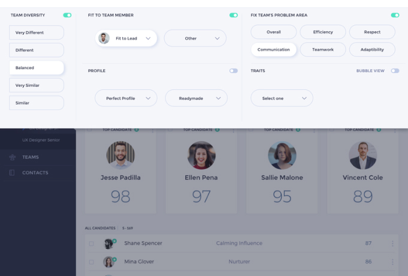

Проектирование информационных панелей с учетом удобства использования
2020
Dashboard, User Experience Design
Информационные панели отображают информацию ключевого показателя производительности (KPI) в виде удобных шкал и диаграмм, чтобы вы легко могли визуализировать и понять влияние дизайнерских решений в реальном времени
Когда вы удаляете, обновляете или удаляете объекты в Активном сценарии, информационная панель автоматически обновляется, чтобы вы немедленно могли увидеть результат реализации ваших проектных решений.